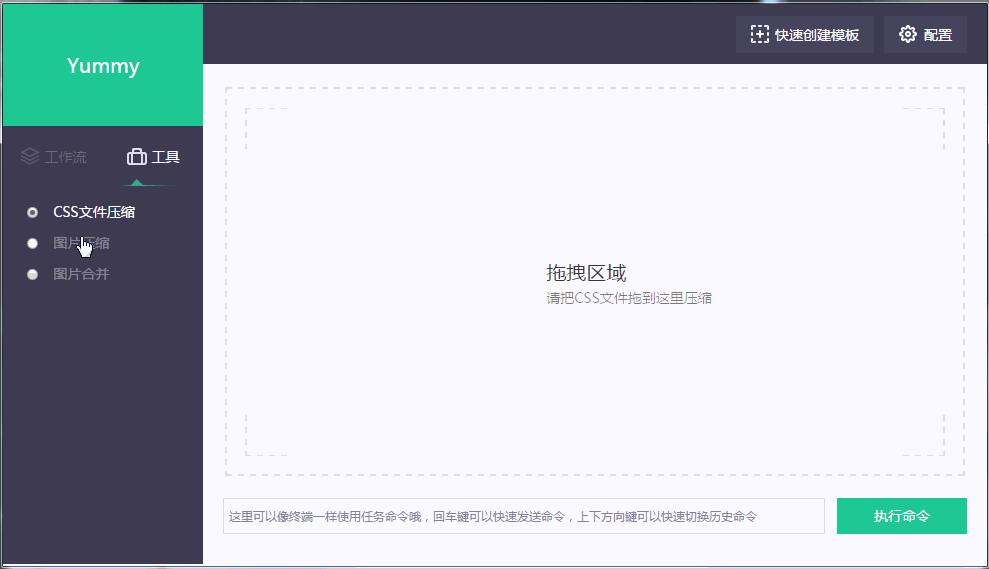
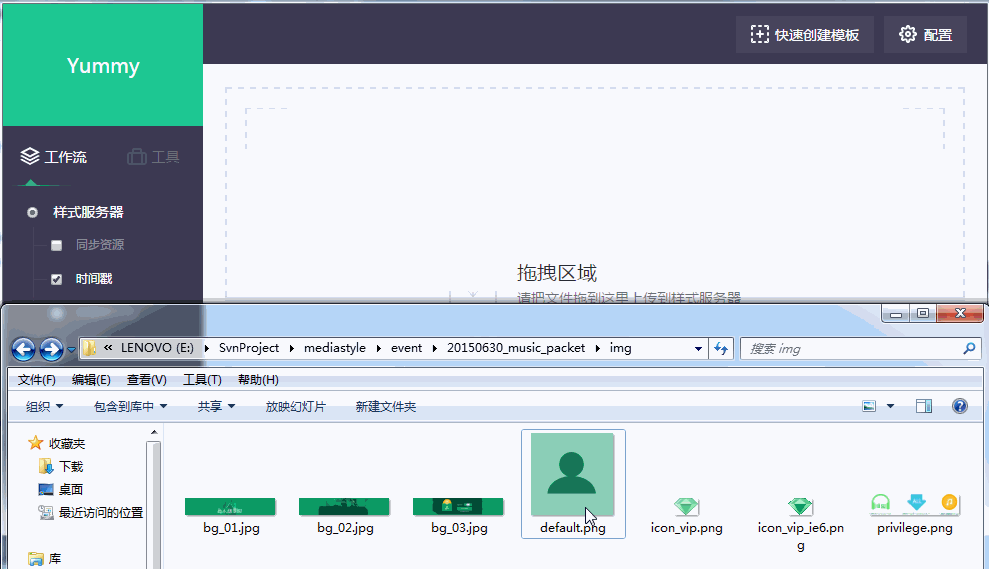
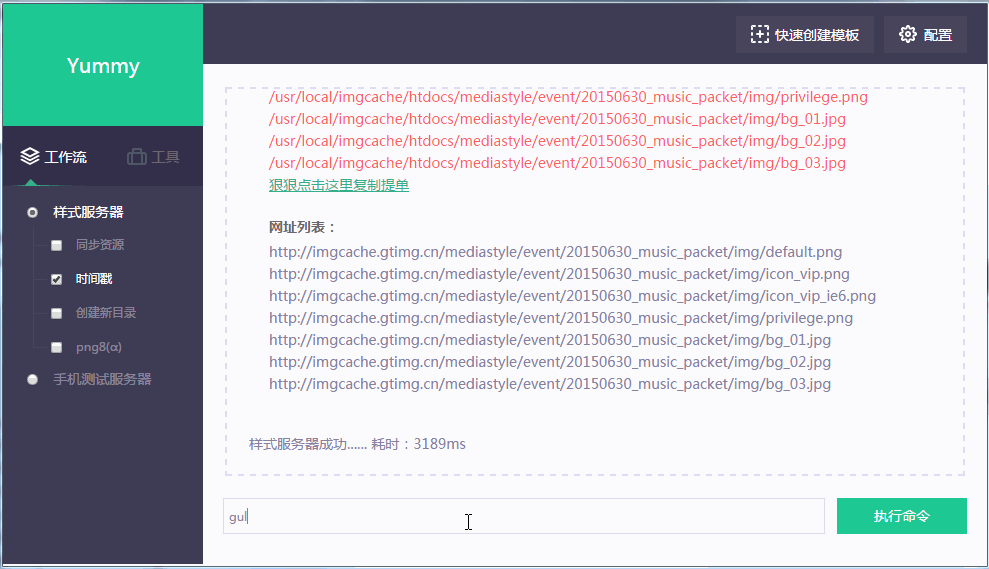

命令式操作的自动化工作流程有个弊端，命令操作的任务处理源基本是基于文件夹维度来操作的，考虑到命令本身太长就不好记的特性，很少是基于文件来操作的。所以命令操作是相对模糊的，因为它不能精确到文件，会产生很多处理过多的问题，比如压缩图片，如果只想有针对性的压缩其中某几张图片而不想全部再压缩一遍，那么命令式操作就不方便了，虽然也可以实现到这样的效果，但是命令相对会比较复杂。
桌面应用程序的前端框架electron结合命令式底层操作实现的可视化能完全的解决这个问题。
可视化操作
可视化启动
可视化启动命令
gulp ui
使用示例：

比如上传到样式服务器的操作只需要轻轻往上面一拖：

为了方便一些爱好使用命令式操作的童鞋方便，减少来回切换界面与终端之间的操作，所以在可视化流程中也加入了命令操作的入口，命令使用跟之前的是一样的哟，大家可以根据喜好来选择操作方式即可：
